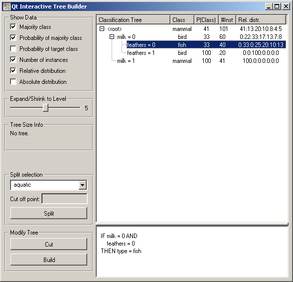
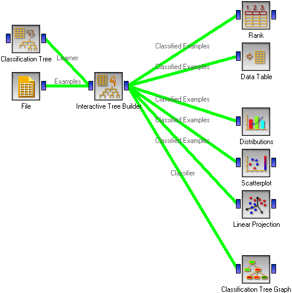
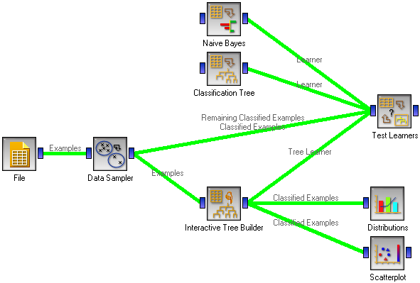
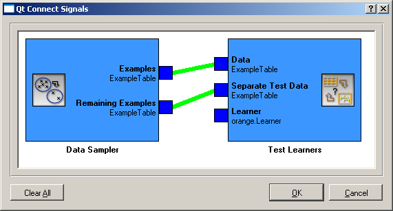

This is documentation for Orange 2.7. For the latest documentation, see Orange 3.
Interactive Tree Builder¶

A widget for manual construction and/or editing of classification trees
Signals¶
Inputs:
- Examples (ExampleTable)
Learning examples
- Tree Learner (orange.TreeLearner)
An optional tree learner to be used instead of the default tree learner.
Outputs:
- Examples (orange.ExampleTable)
Examples from the selected tree node.
- Classifier (orange.TreeClassifier)
The constructed tree.
- Tree Learner (orange.Learner)
A learner which always returns the same tree - the one constructed in the widget
Signal Examples sends data only if some tree node is selected and contains some examples.
Description¶
This is a very exciting widget which is useful for teaching induction of classification trees and also in practice, where a data miner and an area expert can use it to manually construct a classification tree helped by the entire Orange’s widgetry.
The widget is based on Classification Tree Viewer. It is mostly the same (so you are encouraged to read the related documentation), except for the different input/output signals and the addition of a few buttons.
Button Split splits the selected tree node according to the criterion above the button. For instance, if we pressed Split in the above widget, the animals that don’t give milk and have no feathers (the pictures shows a tree for the zoo data set) would be split according to whether they are aquatic or not. In case of continuous attributes, a cut off point needs to be specified as well.
If Split is used on a node which is not a leaf, the criterion at that node is replaced. If we, for instance, selected the <root> node and pushed Split, the criterion milk would be replaced with aquatic and the nodes below (feathers) are removed.
Button Cut cuts the tree at the selected node. If we pushed Cut in the situation in the picture, nothing would happen since the selected node (feathers=0) is already a leaf. If we selected <root> and pushed Cut, the entire tree would be cut off.
Cut is especially useful in combination with Build which builds a subtree at the current node. So, if we push Build in the situation depicted above, a subtree would be built for the milkless featherless animals, leaving the rest of the tree (that is, the existing two nodes) intact. If Build is pressed at a node which is not leaf, the entire subtree at that node is replaced with an automatically induced tree.
Build uses some reasonable default parameters for tree learning (information gain ratio is used for attribute selection with a minimum of 2 examples per leaf, which gives an algorithm equivalent to Quinlan’s C4.5). To gain more control on the tree construction arguments, use a Classification Tree Learner widget or C4.5 Learner widget, set its parameters and connect it to the input of Interactive Tree Builder. The set parameters will the be used for the tree induction. (If you use C4.5, the original Quinlan’s algorithm, don’t forget to check Convert to orange tree structure.)
The widget has several outputs. Examples gives, as in Classification Tree Viewer the list of examples from the selected node. This output can be used to observe the statistical properties or visualizations of various attributes for a specific node, based on which we should decide whether we should split the examples and how.
Signal Classification Tree can be attached to another tree viewer. Using a Classification Tree Viewer is not really useful as it will show the same picture as Interactive Tree Builder. We can however connect the more colorful Classification Tree Graph.
The last output is Tree Learner. This is a tree learner which always gives the same tree - the one we constructed in this widget. This can be used to assess the tree’s quality with the Test Learners widget. This requires some caution, though: you should not test the tree on the same data you used to induce it. See the Examples section below for the correct procedure.
Examples¶
The first snapshot shows the typical “environment” of the Interactive Tree Builder.
The learning examples may come from a file. We also use a Classification Tree Learner widget to able to set the tree induction parameters for the parts of the tree we want to induce automatically.
On the right hand side, we have the Rank widget which assesses the quality of attributes through measures like information gain, gini index and others. Emulating the induction algorithm by selecting the attributes having the highest value for one of these measures should give the same results as using Classification Tree widget instead of the Interactive Builder. However, in manual construction we can (and should) also rely on the visualization widgets. One-dimensional visualizations like Distributions give us an impression about the properties of a single attribute, while two- and more dimensional visualizations like Scatter Plot and Linear Projection will give us a kind of lookahead by telling us about the useful combinations of attributes. We have also deployed the Data Table widget since seeing particular examples in a tree node may also sometimes help the expert.
Finally, we use the Classification Tree Graph to present the resulting tree in a fancy looking picture.
As the widget name suggests, the tree construction should be interactive, making the best use of the available Orange’s visualization techniques and help of the area expert. At the beginning the widget presents a tree containing only the root. One way to proceed is to immediately click Build and then study the resulting tree. Data examples for various nodes can be presented and visualized to decide which parts of the tree make sense, which don’t and should better be reconstructed manually, and which subtrees should be cut off. The other way is to start constructing the tree manually, adding the nodes according to the expert’s knowledge and occasionally use Build button to let Orange make a suggestion.
Although expert’s help will usually prevent overfitting the data, special care still needs to be taken when we are interested in knowing the performance of the induced tree. Since the widely used cross-validation is for obvious reasons inapplicable when the model is constructed manually, we should split the data into training and testing set prior to building the tree.
We have used the Data Sampler widget for splitting the data; in most cases we recommend using stratified random sampling with a sample size of 70% for training. These examples (denoted as “Examples” in the snapshot) are fed to the Interactive Tree Builder where we employ the Orange’s armory to construct the tree as described above.
The tricky part is connecting the Test Learners: Data Sampler’s Examples should be used as Test Learners’ Data, and Data Sampler’s Remaining Examples are the Test Learners’ Separate Test Data.
In Test Learners, don’t forget to set the Sampling type to Test on test data. Interactive Tree Builder should then give its Tree Learner to Test Learners. To compare the manually constructed tree with, say, an automatically constructed one and with a Naive Bayesian classifier, we can include these two in the schema.
Test Learners will now feed the training data (70% sample it gets from Data Sampler) to all three learning algorithms. While Naive Bayes and Classification Tree will actually learn, Interactive Tree Builder will ignore the training examples and return the manually built tree. All three models will then be tested on the remaining 30% examples.